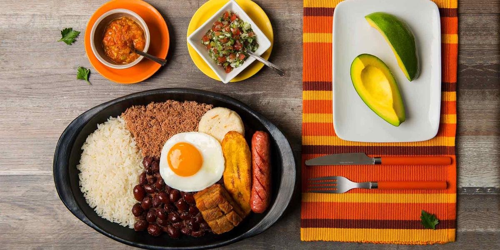

Bandeja Paisa

Traditionally, a Bandeja Paisa consists of two types of Colombian sausage, ground beef, rice, red beans, a fried pork rind called chicharrón, an arepa, a plantain, a slice of avocado (you know, to be healthy) and a fried egg to top it all off.
Ingredients
- 1 recipe Paisa Pinto Beans Frijoles Paisas
- 1 recipe white Rice Arroz Blanco
- 1 recipe Powdered Beef Carne en Polvo
- 4 fried Pork Belly Chicharrones
- 4 cooked Chorizos
- 4 fried eggs sunny side up
- 4 baked plantains or Tajadas de Plátano
- 1 recipe Hogao
- Lime and Avocado for Serving
Instructions
-
Prepare the beans, hogao and powdered beef one day ahead and keep in the refrigerator.
-
When you are going to serve the bandeja paisa, heat the beans and powdered beef and hogao. Make the chicharrones.
-
Cook the white rice and plantains.
-
Fry the eggs and chorizos.
-
To serve, place the rice in a tray or platter and place the rest of the ingredients as you like. I prefer the beans in a separate bowl, but you can ladle the beans next to the rice if you like.
-
Bring the hogao in a serving dish to the table, so people can place it on top of the beans if they like.
Go back